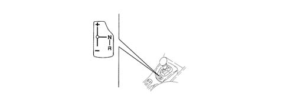
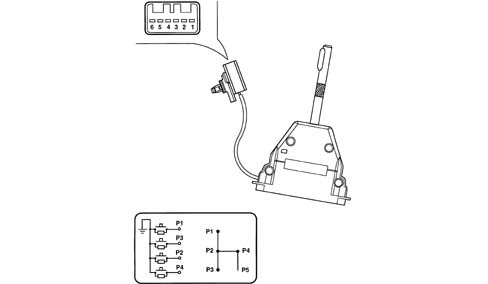
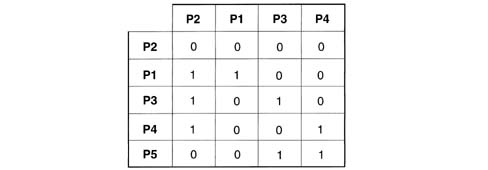
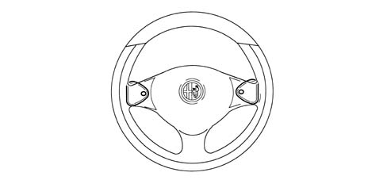

2127A HYDRAULIC TRANSMISSION EXTERNAL LINKAGE
- Path
- Descriptions > 21 GEARBOX UNIT > 2127 HYDRAULIC TRANSMISSION EXTERNAL LINKAGE > 2127A HYDRAULIC TRANSMISSION EXTERNAL LINKAGE
- Kind
- system description
- Applies to
- engines: 2.0 JTS; all production periods
- Interactive page
- https://sloeber94.github.io/elrnDB-aGt/en/#/125000335
Applies to: engines: 2.0 JTS; all production periods; only with equipment: Smart gearbox
COMPONENT DESCRIPTION
GEAR SELECTION CONTROL LEVER
When in semiautomatic mode, gear changes are made using a floating control lever with a single stable central position.
To change gear, hold the brake pedal down and:
- push the lever forward (+) to change up;
- push the lever back (-) to change down.
To engage neutral (N), move the gear lever to the right with the car at a standstill and the brake pedal pressed.
Reverse (R) can be engaged from any speed and with the car at a standstill by pushing the lever to the right and back.

It is equipped with four normally open switches, each with two electrical resistors. One resistor is in parallel with the contact and the other is earthed.

The various combinations for activation of switches P1-P2-P3-P4 are summarised in the following table.

STEERING WHEEL WITH SPEED SELECTION LEVERS
There are two levers on the steering wheel, under the spokes, through which, when the car is moving, the driver can change up or down a gear.
Use the left hand button (-) to change down and the right hand button (+) to change up.
